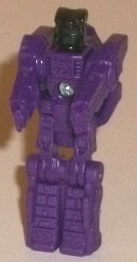
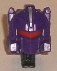
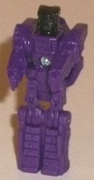
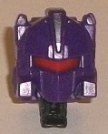
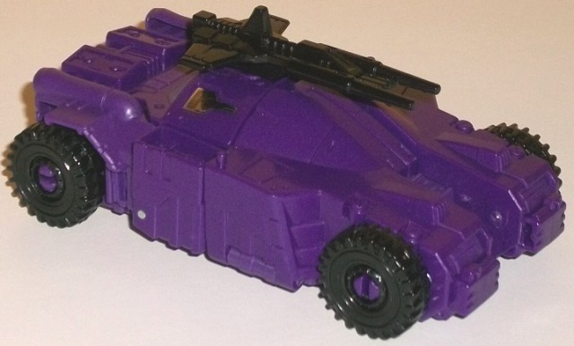
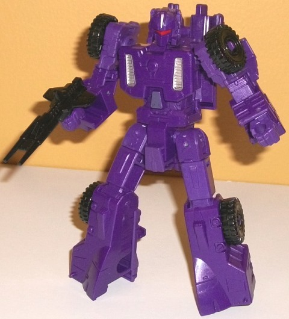
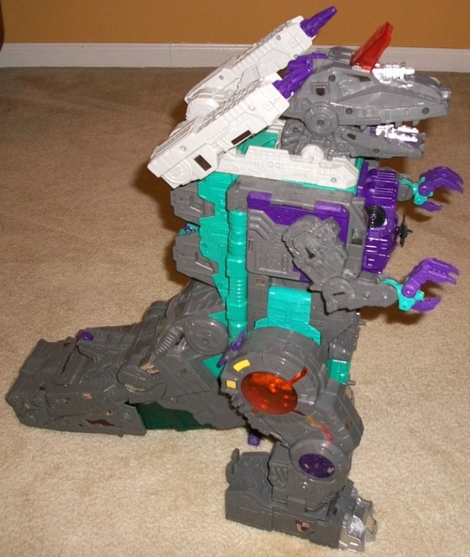
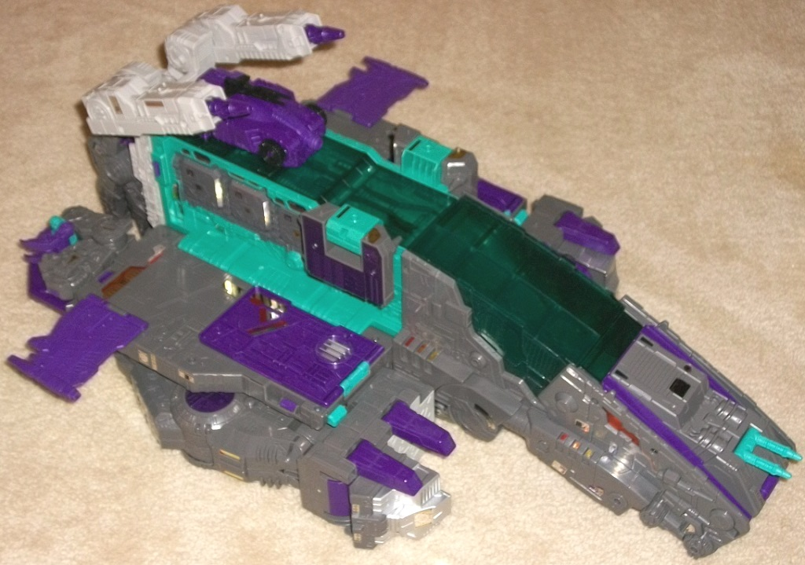
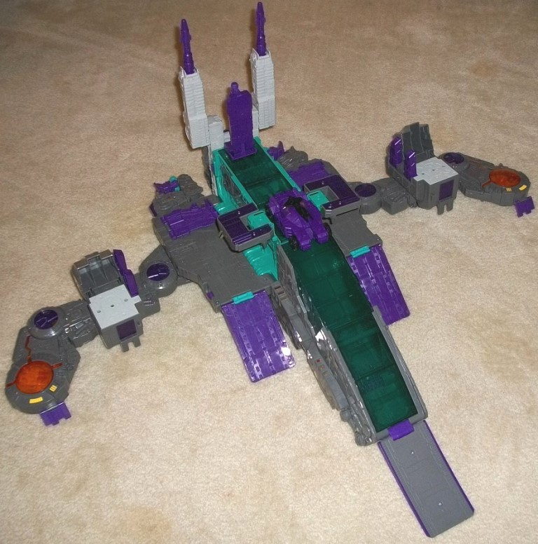

 
Difficulty of Transformation : Very Easy
Individual Rating : 3.6
Allegiances
: Decepticon
Size
: Titan ($150 U.S.)
Color Scheme:
Purple, moderately
dark gray, seafoam green, transparent dark seafoam green, and some silver,
beige, transparent dark orange, yellow, metallic dark purple, black, and
red
 Necro
Necro


Difficulty of Transformation
: Very
Easy
Individual Rating
: 3.6
Necro's robot mode details
are based off of the obscure Trypticon minion Wipe-Out, who is based off
of Tailgate; thus it looks like Tailgate "squished" into Titan Master proportions.
You've got the ridged stripe details on the legs, a few lines and squares
on the upper legs and chest that mimic the G1 toy details, and a facesculpt
that looks a bit like Tailgate's but with a wider, larger visor and more
square proportions to fit the whole Titan Master gimmick. (Honestly it
looks more like the head of a Constructicon than Tailgate what with it
being this squared-off.) The arms are fairly average, with some hand details
molded on the inside, but otherwise nothing particularly noteworthy about
them. Like with most Titan Masters, Necro has no paint at all in robot
mode; he's all purple, with black on the head for some odd reason. Given
all the nifty mold details this is definitely a shame. As with all Titan
Masters, Necro can move at the head and back-and-forth at the shoulders,
hips, and knees (with the latter two being at one point, as the legs are
one piece). In head mode, Necro forms the noggin of Full-Tilt, and the
headsculpt is pretty spot-on. The head shape is fairly round (with the
Titan Master arms sticking up a bit from the sides, natch), with details
on the side that look like he's wearing a round helmet with a silver triangular
detail on the forehead. He's got a faceplate, as well as an angular red
visor, which all looks pretty good against an otherwise completely purple
head. There's just a few extra lines here and there on the sculpt, but
it really helps make the whole thing look more visually interesting beyond
just the basic details.
 Full-Tilt
Full-Tilt


Difficulty of Transformation
: Medium
Individual Rating
: 8.1
Full-Tilt was Trypticon's
little buddy-chest-car in G1, so it's replicated faithfully here in Titans
Return. He's roughly deluxe-sized, in case you're wondering. In vehicle
mode, Full-Tilt is a futuristic car that kinda looks halfway between a
sturdy armored car and a sportscar-- it's pretty curvy at the top with
a slim windshield, but the edges are fairly angular and chunky with some
armor panel-like details on the sides. The mold detailing on him is quite
intricate in most places-- there's "screw" details, "bolts" on the armor
panels, a rectangular engine section near the back, details on the wheels,
and some circuitry details on the top center of the mode. On the underside,
there's also some intricate panel detailing on bits that you won't see
easily in either mode (they're on the back of the legs in robot mode)--
that's even more impressive, quite frankly. Unfortunately, Full-Tilt is
almost entirely purple. Like, he's got black wheels, a black dual-barreled
blaster that fits onto a peg on the top of this mode, and two little stickers
on the hood, and that's it. EVERYTHING ELSE is purple, which-- though a
nice color-- desperately needs some more color breakup with all these excellent
mold details. There's no robot extras at all in this mode, which is always
good, though the back end has a hollow bit where you think an exhaust port
or something of the sort would be-- there's no real back bumper. That said,
I DO like the "split" down the center of the front bumper-- it's done well
and helps give Full-Tilt more of a futuristic, unique look. You can open
up the top of the mode and there's a place inside Full-Tilt for Necro (or
another Titan Master) to ride in-- with a lot more impressive intricate
mold detailing inside as well. Beyond the cockpit, there's also two little
pegs on the top of the mode near the middle sides for Titan Masters to
stand on as well.
Full-Tilt's robot mode
is pretty good overall-- certainly much better than the G1 version, which
had very odd proportions! The sides of the car mode form the arms, the
front sections fold out to form the legs, and most of the main body of
the car mode forms... the main body of the robot mode. And then, of course,
Necro plugs in to become the head. There is a chunk of the middle of the
back end that sorta just sticks behind his upper back and sticks out a
bit. It doesn't get in the way of any movement, but it is a minor eyesore--
finding a way to get it to fold down further on the back would've been
great. Otherwise there really aren't any extras at all, which is pretty
impressive. The arms proportionally are a bit short, particularly the lower
arms, but otherwise Full-Tilt's looking pretty good in this respect. He's
got some nice rectangular details on the arms, some nice intricate armor
plates on the abs, and some silver-painted vents on the sides of his chest;
otherwise most of the mold details from vehicle mode are evident in this
mode as well. Unfortunately beyond those silver vents and the paint on
the head, though, there's STILL no other paint in this mode, which is just
really unfortunate. This is easily Full-Tilt's biggest weakness, his complete
lack of a real color scheme. For articulation, Full-Tilt can move at the
head, shoulders (at two points), elbows (at two points), hips (at three
points), and knees, so he's pretty well-articulated (though waist rotation
would've been appreciated). He's quite well-balanced, too, so he can pull
off some nice poses.
 Trypticon
Trypticon



Difficulty of Transformation to Battleship
:
Easy
Difficulty of Transformation to Base
:
Medium
Individual Rating
: 4.2
Trypticon is very much
a direct re-do of his G1 toy, but at a MUCH larger scale. With previous
Titan-class figures, even though they were heavily based on the original
G1 toys, there will still some definite differences besides size, proportions,
and articulation. With Trypticon this is a giant "old-style" Godzilla monster
"robot mode" with the tail dragging behind him, with his body in a fairly
upright position. It's so accurate to the original in terms of general
look that the feet even have two purple planks on the interior side to
mimic the G1 toy's details there that were required for the original's
electronic "walking gimmick". This is despite the fact that this massive
toy has no such gimmick, so they're completely unneeded! Regardless, this
is an excellent-looking mode overall, with some great proportions. The
tail ends a bit suddenly-- I wish it got a bit more to a point then a stub--
but otherwise everything looks good here in that respect. The MOST impressive
thing about Trypticon-- and what makes him look even bigger than he is,
frankly-- is the VERY intricate mold detailing used over almost the entire
figure. Particularly on the gray parts, there's vents, hinges, tubes, circuitry
lines, gears... basically anything remotely mechanical-looking, there's
that kind of detail somewhere on Trypticon. As for the color scheme, he's
mostly a fairly medium shade of gray, which isn't particularly exciting,
but certainly accurate to the source material and it's not that awful light
milky gray, so that's always good. (There is some lighter beige used for
the shoulder-mounted rocket launchers and around the neck, but it's not
used much and is decent as an accent color. Oh, and it should also be noted
here that the rocket launchers don't launch actual rockets, the rockets
just extend out of the launchers a bit.) There's also a lot of seafoam
green on the main body (especially near the back), though it's not particularly
bright. I'm kind of ambivalent about this-- it's certainly a bit unique
and pegs Trypticon as a toy from the mid-to-late '80s, but it doesn't really
go with the gray that well. It DOES, however, go with the purple, which
is used a bit on the shoulders, claws, and chest w/ Full-Tilt. (Full-Tilt,
by the way, is kept in place by a rectangular piece that essentially plugs
into his rear end and cradles around the front end to hold him securely.)
There's also some metallic purple paint on the side of the knees, which
looks quite nice. There's some transparent dark seafoam green plastic used
for the chest underneath Full-Tilt, along with the long transparent battleship
cockpit area on the underside of the tail. It both complements and contrasts
against the regular seafoam green plastic, so it's a nice little addition.
Additionally, there's a bit of transparent orange on the hips, with some
silver mechanical bits on the inside, all of which looks REALLY great and
is my favorite part of Trypticon's scheme color-wise, along with a bit
more transparent orange around the middle of each side of the tail. There's
also a bit of orange on the piece on Trypticon's forehead. As far as some
accent colors, there's some silver on the feet and head guns and a touch
of yellow on the hips. As with other Titan figures up to this point, there's
also TONS of foil stickers to place all over the place, so have fun spending
hours doing that. For movement, Trypticon can open his mouth; move up-and-down
and rotate at the neck; the shoulder launchers can move up-and-down; the
arms can move at the shoulders, elbows, wrists, and at the base of his
claws (the top two claws on each hand as one piece); at the hips (theoretically--
more on this later); at the knees, side-to-side at the ankles slightly,
and up-and-down at the base of the tail. For gimmicks, by plugging in Necro
or another Titan Master figure into the small bit near the rear of his
skull, the orange forehead window will pop up, revealing another gun, which
is pretty cool. Being a Titan figure in a line filled with Titan Masters,
Trypticon can actually EAT Titan Masters-- just drop them down in his mouth
and they'll fall down into his transparent stomach. Open up the stomach
latch to take out said Titan Masters. It's not super-complex or impressive,
but it IS kinda cool. Unfortunately now we get to Trypticon's QA issues,
which are MASSIVE. For one thing, many of them have their transparent window-chest
pieces warped a bit, which means it's pretty scary opening them up to get
out Titan Masters, given that transparent plastic is a bit more fragile
than your normal plastic and this is a large, flat piece. After doing it
twice, I'm never doing it again, which is a shame, as it essentially nullifies
his Titan Master-eating gimmick. More seriously, the tail gear on many
copies isn't set correctly, and will break after just a little bit of movement,
living him with a limp tail. There's a fix for this, but it involves taking
apart almost the ENTIRE toy and epoxying gears together and is VERY complex--
I tried and failed at it, and now my Trypticon's tail is limp. The worst
of all though, has to be the hips, and this is a near-universal problem.
Simply put, as-is they will NOT move, no matter how hard you try to move
them. Considering that this is REQUIRED for transformation, this is a humongous
downside. The problem here is that the springs in the hips are entirely
too long and under too much stress-- to fix this, you have to disassemble
the hips and cut out a certain amount of the coil. Thankfully my "surgery"
on this was successful and now my Trypticon's hips move just fine, but
man
.
That was a stressful assembly and
ABSOLUTELY NOT ACCEPTABLE
, especially
on Hasbro's flagship toy for the year.
To get Trypticon into
his "battleship" mode, for the most part you rotate around his head and
rocket launchers, fold up his arms and his arm panels, and then split the
main body into thirds, with each side coming down from the center area
when you press in on a little "unlocking" tab on the pelvis. This unlocking
tab also allows you to pull up on each leg and rotate it up further onto
the main body in place of where the arms used to be, and then plug those
legs into the base of the tail. Then just flip out little wing pieces and
you're done. The effort to get the toy into this mode comes from force
and the fact you're dealing with a large toy, not in terms of complexity.
The end result is mostly one of those "because we say so" modes. I mean,
the flip-out wings at each side are pitifully small and not remotely convincing,
even by Transformer standards. The feet fold up pretty darned well underneath
the large flat sections on each side of this mode, and generally look pretty
good, with plenty of area for deluxe-sized and smaller toys to land on.
There's TONS of 5mm weapon peg holes and pegs for Titan Masters in this
mode; more than I'm going to bother to count, quite frankly. Just... a
LOT. The tail forms a bit of a large nosecone in this mode, with the transparent
orange bits on the sides of the nosecone looking a bit like evil "eyes"
in this mode. There's a small dual-barreled gun on the front of the nosecone
as well for some firepower. Of course there's also the rocket launchers
near the back end of this mode, but behind that is where the weakest part
of this mode is-- the arms are folded up, but they're still blatantly obvious
just behind the big side pieces on this mode, and the Trypticon head is
only slightly less obvious, poking out of the back end where you think
there should be a big exhaust port of some sort. (Does that mean Trypticon
barfs fire in this mode to move the battleship along?) Overall it's mostly
just a big square-ish base for a bunch of smaller toys to hang out on.
The biggest difference
between Trypticon's battleship and base modes is that for the latter his
legs fold out and almost completely split in half, forming long pieces
that sort of "frame" the main body of the base. The end of the nosecone
folds down to become a full-blown ramp, with little sections near what
become Trypticon's hips fold down so that Full-Tilt can slide down the
long ramp quite easily. The missile launchers fold upwards and extend,
becoming towers, while the piece that holds Full-Tilt in robot/beast mode
also folds up to become another tower. That said, they're both too small
even compared to Titan Masters to really be towers; they're rather weak.
There's also two fat purple ramps that fold down on each side of the main
body. And there you have it; base mode. For the most part functionally
it's the same as battleship mode, just more "extended", with even more
little pegs for Titan Masters, and with little platforms now formed from
the base of each foot. There's also little clips on each end of the base
for Trypticon to clip onto other Titans Return Leader class figures in
their own base modes. It is quite impressive, though, just HOW MUCH this
base extends in EVERY direction-- you're going to need quite a big space
to open this whole base mode up.
Taken by himself, I
find Titans Return Trypticon the best of the "single figure" Titans in
the Prime Wars trilogy. He's got a VERY nice robot/beast mode, an impressively
large base mode with lots of interaction with Titan Masters and the like,
and although his battleship mode is a bit weak and more of an "in-between"
mode in between the other two, it's better than some of the other Titan
"tertiary" modes. Full-Tilt and Necro are also solid for their size classes
too, though they desperately need more paint. However, my rating for Trypticon
is so low because the QA issues with his hips, tail, and chest panel are
absolutely unacceptable for ANY Transformers toy, much less the largest,
flagship toy for Hasbro for the year. I can't believe these huge issues
got to market, especially since they can't easily be fixed like a loose
ball joint or something. This especially hurts for fans given that this
was the "Fan Vote" Titan. If you're really good at "toy surgery", than
take a crack at him. Otherwise I unfortunately have to say avoid him because
of those huge QA issues.
Review by Beastbot